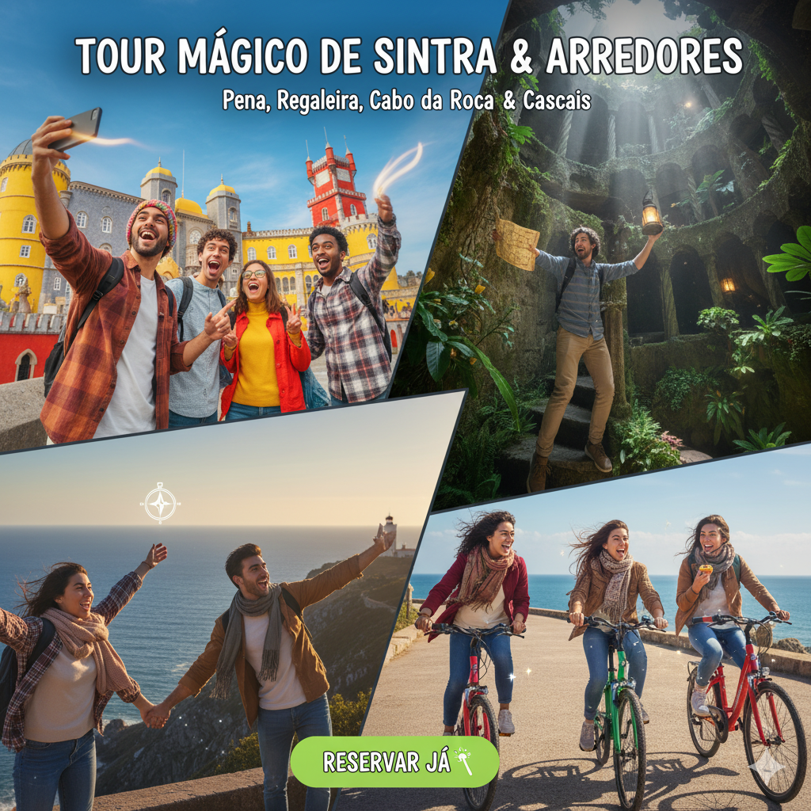
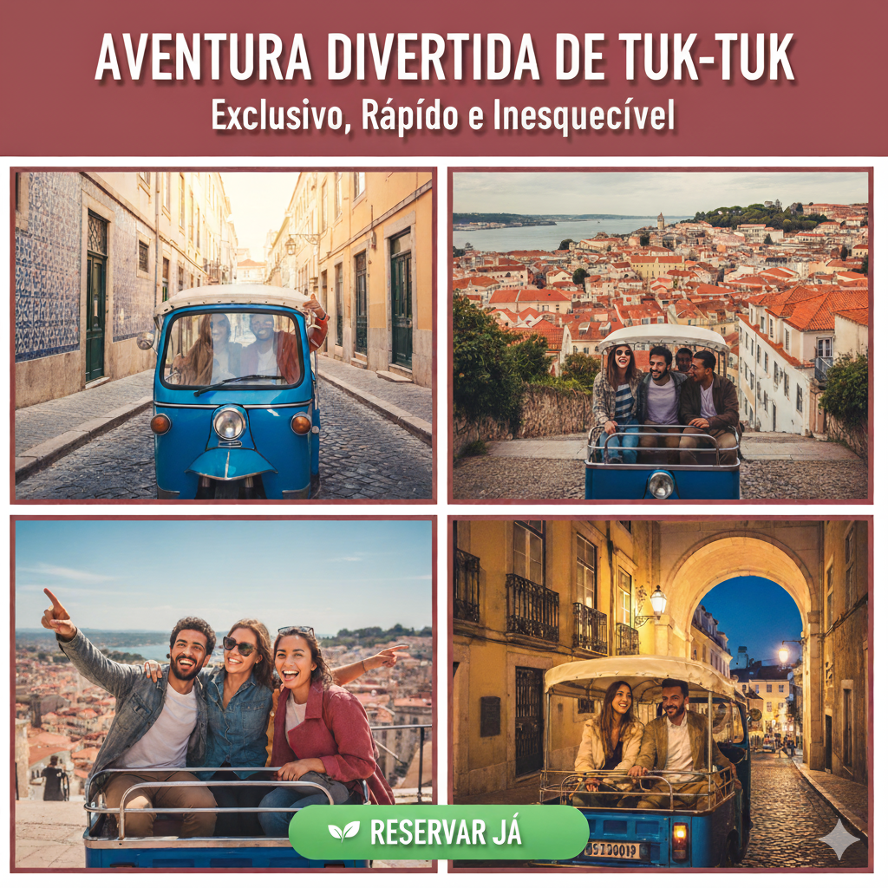

Excursão a Sintra, Cascais e Cabo da Roca
Explore palácios de contos de fadas e a costa selvagem, tudo num só dia. Garanta a sua vaga na excursão mais procurada de Lisboa!
City Tour de Tuk-Tuk
Suba as colinas de Alfama sem esforço e descubra os recantos secretos da cidade. A forma mais divertida e fotogénica de explorar Lisboa!
Aula de Pastel de Nata
Leve o sabor de Lisboa para casa! Aprenda o segredo do Pastel de Nata numa aula prática e deliciosa. Vagas limitadas!